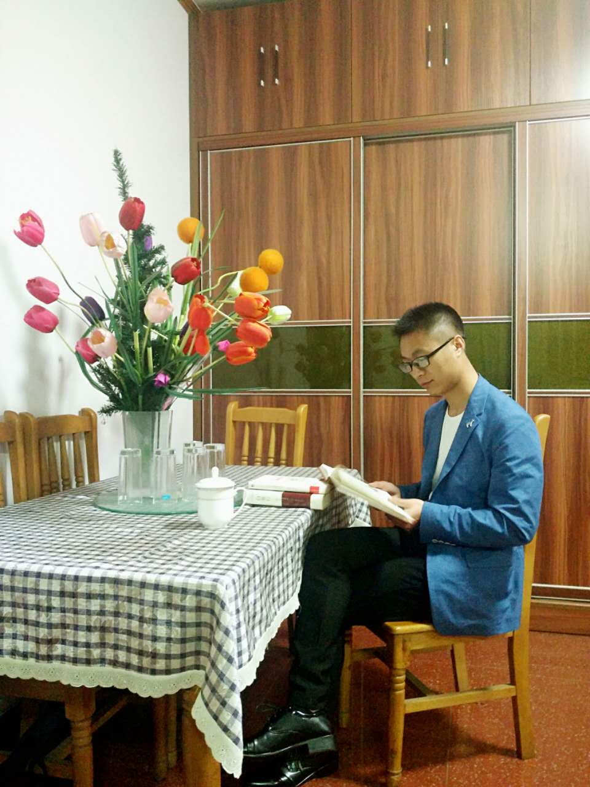

<!DOCTYPE html>
<html lang="zh-cn">
	<head>
		<meta charset="utf-8">
		<meta http-equiv="X-UA-Compatible" content="IE=edge">
		<meta name="viewport" content="width=device-width,initial-scale=1">
		<!--[if lt IE 9]>	
			<script src="https://oss.maxcdn.com/libs/html5shiv/3.7.0/html5shiv.js"></script>
	    	<script src="https://oss.maxcdn.com/libs/respond.js/1.3.0/respond.min.js"></script>
	    <![endif]-->
		<title>sunnyL的博客</title>
		<!-- <link rel="bookmark" href="favicon.ico" type="image/x-icon"/>
		<link rel="shortcut icon" href="favicon.ico"> -->
		<!-- 加载bootstrap层叠样式表 -->
		<link rel="stylesheet" href="js/bootstrap-3.3.7-dist/css/bootstrap.min.css">
		<!-- 引入自定义样式 -->
		<link rel="stylesheet" href="css/myCSS/index.css">
	</head>
	<!-- oncontextmenu=self.event.returnValue=false 屏蔽鼠标右键功能 -->
	<body oncontextmenu=self.event.returnValue=false>
		
		<!-- <div class="main_container">
			<div class="header_container">
				
			</div>
		</div> -->
		<!-- 引入jQuery库 -->
		<script src="http://cdn.bootcss.com/jquery/1.11.1/jquery.min.js"></script>
		<!-- 引入bootstrap库 -->
		<script src="js/bootstrap-3.3.7-dist/js/bootstrap.min.js"></script>
		<script src="js/myJs/bg_img.js"></script>
	</body>
</html>
